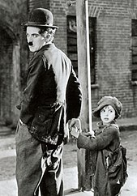
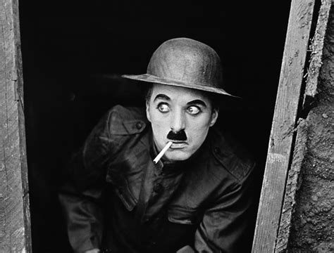

Sir Charles Spencer Chaplin KBE

Charlie Chaplin (16 April 1889 – 25 December 1977) was an English comic actor, filmmaker, and composer who rose to fame in the era of silent film. He became a worldwide icon through his screen persona, "The Tramp", and is considered one of the most important figures in the history of the film industry. His career spanned more than 75 years, from childhood in the Victorian era until a year before his death in 1977, and encompassed both adulation and controversy.
Chaplin's childhood in London was one of poverty and hardship, as his father was absent and his mother struggled financially, and he was sent to a workhouse twice before the age of nine. When he was 14, his mother was committed to a mental asylum. Chaplin began performing at an early age, touring music halls and later working as a stage actor and comedian. At 19, he was signed to the prestigious Fred Karno company, which took him to America. He was scouted for the film industry and began appearing in 1914 for Keystone Studios. He soon developed the Tramp persona and formed a large fan base. He directed his own films and continued to hone his craft as he moved to the Essanay, Mutual, and First National corporations. By 1918, he was one of the best-known figures in the
In 1919, Chaplin co-founded the distribution company United Artists, which gave him complete control over his films.
His first feature-length film was The Kid (1921), followed by A Woman of Paris (1923), The Gold Rush (1925), and The Circus (1928). He initially refused to move to sound films in the 1930s, instead producing City Lights (1931) and Modern Times (1936) without dialogue. He became increasingly political, and his first sound film was The Great Dictator (1940), which satirised Adolf Hitler. The 1940s were a decade marked with controversy for Chaplin, and his popularity declined rapidly. He was accused of communist sympathies, and some members of the press and public found his involvement in a paternity suit, and marriages to much younger women, scandalous. An FBI investigation was opened, and Chaplin was forced to leave the United States and settle in Switzerland. He abandoned the Tramp in his later films, which include Monsieur Verdoux (1947), Limelight (1952), A King in New York (1957), and A Countess from Hong Kong (1967).
Chaplin wrote, directed, produced, edited, starred in, and composed the music for most of his films. He was a perfectionist, and his financial independence enabled him to spend years on the development and production of a picture. His films are characterised by slapstick combined with pathos, typified in the Tramp's struggles against adversity. Many contain social and political themes, as well as autobiographical elements. He received an Honorary Academy Award for "the incalculable effect he has had in making motion pictures the art form of this century" in 1972, as part of a renewed appreciation for his work. He continues to be held in high regard, with The Gold Rush, City Lights, Modern Times, and The Great Dictator often ranked on lists of the greatest films of all time.

Charles Spencer Chaplin was born on 16 April 1889 to Hannah Chaplin (born Hannah Harriet Pedlingham Hill) and Charles Chaplin Sr. There is no official record of his birth, although Chaplin believed he was born at East Street, Walworth, in South London. His parents had married four years previously, at which time Charles Sr. became the legal guardian of Hannah's illegitimate son, Sydney John Hill. At the time of his birth, Chaplin's parents were both music hall entertainers. Hannah, the daughter of a shoemaker, had a brief and unsuccessful career under the stage name Lily Harley, while Charles Sr., a butcher's son, was a popular singer. Although they never divorced, Chaplin's parents were estranged by around 1891. The following year, Hannah gave birth to a third son – George Wheeler Dryden – fathered by the music hall entertainer Leo Dryden. The child was taken by Dryden at six months old, and did not re-enter Chaplin's life for 30 years.
Chaplin's childhood was fraught with poverty and hardship, making his eventual trajectory "the most dramatic of all the rags to riches stories ever told" according to his authorised biographer David Robinson. Chaplin's early years were spent with his mother and brother Sydney in the London district of Kennington; Hannah had no means of income, other than occasional nursing and dressmaking, and Chaplin Sr. provided no financial support. As the situation deteriorated, Chaplin was sent to Lambeth Workhouse when he was seven years old. The council housed him at the Central London District School for paupers, which Chaplin remembered as "a forlorn existence". He was briefly reunited with his mother 18 months later, before Hannah was forced to readmit her family to the workhouse in July 1898. The boys were promptly sent to Norwood Schools, another institution for destitute children.
In September 1898, Hannah was committed to Cane Hill mental asylum – she had developed a psychosis seemingly brought on by an infection of syphilis and malnutrition. For the two months she was there, Chaplin and his brother Sydney were sent to live with their father, whom the young boys scarcely knew. Charles Sr. was by then a severe alcoholic, and life there was bad enough to provoke a visit from the National Society for the Prevention of Cruelty to Children. Chaplin's father died two years later, at 38 years old, from cirrhosis of the liver.
Hannah entered a period of remission but, in May 1903, became ill again. Chaplin, then 14, had the task of taking his mother to the infirmary, from where she was sent back to Cane Hill. He lived alone for several days, searching for food and occasionally sleeping rough, until Sydney – who had enrolled in the Navy two years earlier – returned. Hannah was released from the asylum eight months later, but in March 1905, her illness returned, this time permanently. "There was nothing we could do but accept poor mother's fate", Chaplin later wrote, and she remained in care until her death in 1928.
"I was hardly aware of a crisis because we lived in a continual crisis; and, being a boy, I dismissed our troubles with gracious forgetfulness."
— Chaplin on his childhood.